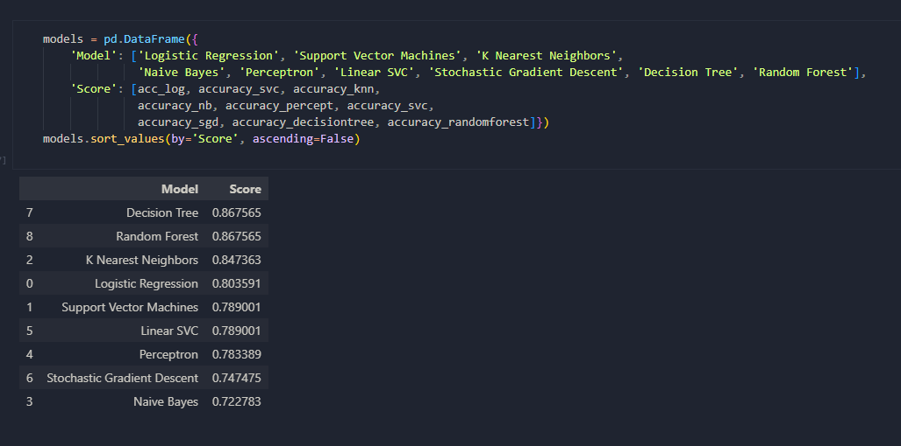

Titanic Passenger Survival Prediction using Machine Learning
Introduction
This is my first endeavor into machine learning and applying my learnings through the classic Titanic dataset found on Kaggle.
Kaggle describes the challenge as such:
The sinking of the Titanic is one of the most infamous shipwrecks in history.
On April 15, 1912, during her maiden voyage, the widely considered “unsinkable” RMS Titanic sank after colliding with an iceberg. Unfortunately, there weren’t enough lifeboats for everyone onboard, resulting in the death of 1502 out of 2224 passengers and crew.
While there was some element of luck involved in surviving, it seems some groups of people were more likely to survive than others.
In this challenge, we ask you to build a predictive model that answers the question: “what sorts of people were more likely to survive?” using passenger data (ie name, age, gender, socio-economic class, etc).
Data
The data used for this project can be found and downloaded directly on Kaggle: here
The data includes all sorts of information regarding the passengers, including their name, age, passenger class (ie. 1st class, 2nd class, etc.), whether they had siblings and/or their spouse on board, and more.
Project
As with all datasets, I started off with importing Numpy and Pandas to do some cleaning and exploratory data analysis, Matplotlib and Seaborn for some visualizations, and Scikit-learn for the actual machine learning.
The dataset was fairly clean, so it was mostly about getting an initial overview of the data that I was working with and some general understanding of it through some exploratory data analysis. My initial thought process was to explore some factors such as passenger class, the gender of the passenger, or whether they were on the Titanic with their spouse or sibling, and whether these factors would have an significance to their rate of survival.
Then it was off to using Seaborn to build some visualizations to get a better understanding of some parts of the data, like in the example shown of whether or not age was a factor in passenger survival. The next step that I took to build on this was to create a facet grid of histograms to see how adding in the passenger class would affect this. Surely enough, just in terms of passenger class alone, first class passengers were more likely to survive, which was likely attributed to them being the first to be evacuated. In turn, this also explained how the first class passengers tended to have more elderly survivors.

After all the exploratory data analysis, the data had to be formatted in order to build the model. This included dropping some columns that did not have a factor in the survival rate, such as name, ticket, and column. The next step was to create some columns to combine existing columns like whether or not the passenger was there with their spouse, siblings, parents, and/or children. Using this data, we can determine whether a passenger came on the Titanic alone or with other family members and this distinction actually provided more concrete indications when compared to say a passenger who boarded with 2 or 11 family members.
Once the data had been prepped, it was time to build the model using Scikit-learn. Evidently, I wasn't sure which was the best algorithm to use so I tested them. This included: Log Reg, SVM, KNN, Naive Bayes, Perceptron, Linear SVC, Stochastic Gradient Descent, Decision Tree, and Random Forest. As shown on the right, I created a table and ordered them based off of accuracy score and ended up going with Random Forest for my final submission.
The notebook can be found here: titanic.ipynb.